Zagreusmemo:mythologie
Zagreusmemo:mythologie Hadèsmemo:mythologie
Hadèsmemo:mythologie Perséphonememo:mythologie
Perséphonememo:mythologie Nyxmemo:mythologie
Nyxmemo:mythologie Chaosmemo:mythologie
Chaosmemo:mythologie Érèbeimposée
Érèbeimposée Zeusmemo:mythologie
Zeusmemo:mythologie Poséidonmemo:mythologie
Poséidonmemo:mythologie Héramemo:mythologie
Héramemo:mythologie Athénamemo:mythologie
Athénamemo:mythologie Arèsmemo:mythologie
Arèsmemo:mythologie Aphroditememo:mythologie
Aphroditememo:mythologie Apollonmemo:mythologie
Apollonmemo:mythologie Artémismemo:mythologie
Artémismemo:mythologie Dionysosmemo:mythologie
Dionysosmemo:mythologie Démétermemo:mythologie
Démétermemo:mythologie Hermèsmemo:mythologie
Hermèsmemo:mythologie Hestiamemo:mythologie
Hestiamemo:mythologie Hécatememo:mythologie
Hécatememo:mythologie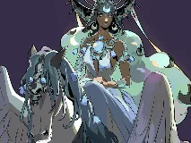
Sélénémemo:mythologie Érismemo:mythologie
Érismemo:mythologie Némésiswiki-fr
Némésiswiki-fr Morosmemo:mythologie
Morosmemo:mythologie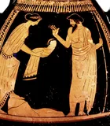
Cronoswiki-fr Prométhéememo:mythologie
Prométhéememo:mythologie Typhonwiki-fr
Typhonwiki-fr Médusememo:mythologie
Médusememo:mythologie Scyllawiki-fr
Scyllawiki-fr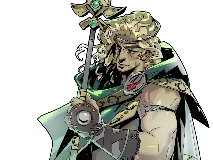
Achillememo:mythologie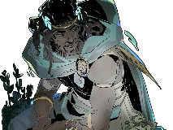
Patroclewiki-fr
Sisyphememo:mythologie
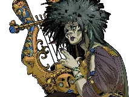
Orphéememo:mythologie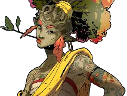
Eurydicememo:mythologie Charonmemo:mythologie
Charonmemo:mythologie Cerbèrememo:mythologie
Cerbèrememo:mythologie Hypnosmemo:mythologie
Hypnosmemo:mythologie Thanatosmemo:mythologie
Thanatosmemo:mythologie Érinyesmemo:mythologie
Érinyesmemo:mythologie
Gaïawiki-fr
Ouranoswiki-fr
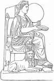
Rhéawiki-fr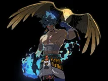
Atlasmemo:mythologie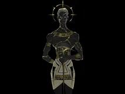
Chronosmemo:mythologie
Styxwiki-fr
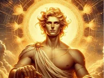
Héliosmemo:mythologie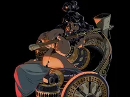
Héphaïstosmemo:mythologie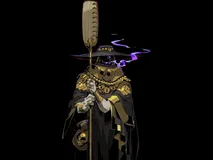
Érosmemo:mythologie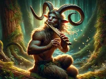
Panwiki-fr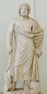
Asclépioswiki-fr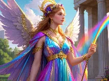
Iriswiki-fr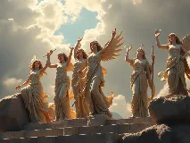
Les Museswiki-fr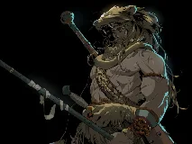
Héraclèsmemo:mythologie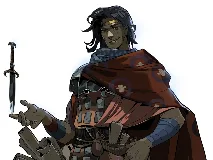
Ulyssememo:mythologie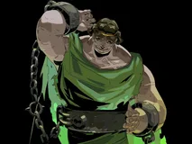
Perséememo:mythologie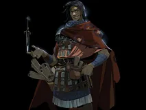
Théséememo:mythologie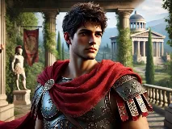
Jasonwiki-fr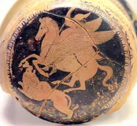
Bellérophonwiki-fr
Icarememo:mythologie
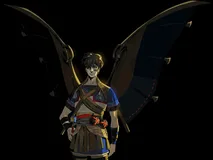
Dédalememo:mythologie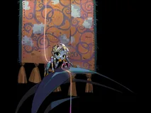
Œdipememo:mythologie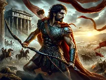
Hectorwiki-fr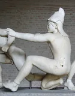
Pâriswiki-fr
Hélène de Troiewiki-fr
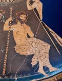
Agamemnonwiki-fr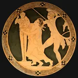
Cassandrewiki-fr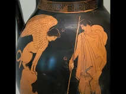
Pandorememo:mythologie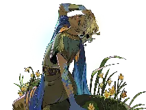
Narcissememo:mythologie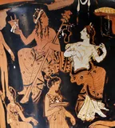
Arianewiki-fr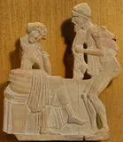
Pénélopewiki-fr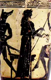
Circéwiki-fr
Antigonewiki-fr
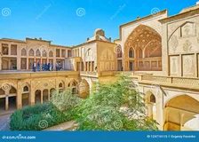
Minotaurebing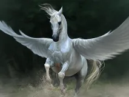
Pégasewiki-fr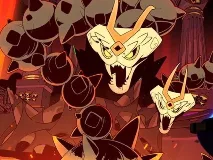
Hydre de Lernewiki-fr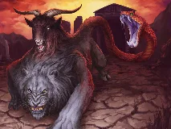
Chimèrewiki-fr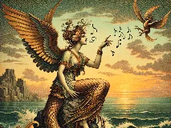
Sirène (mythologie grecque)wiki-fr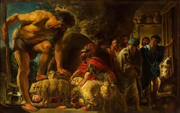
Polyphèmewiki-fr
Sphinxwiki-fr
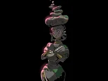
Arachnémemo:mythologie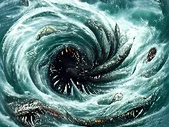
Charybdewiki-fr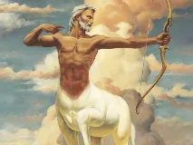
Chironwiki-fr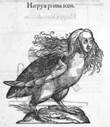
Harpiewiki-fr